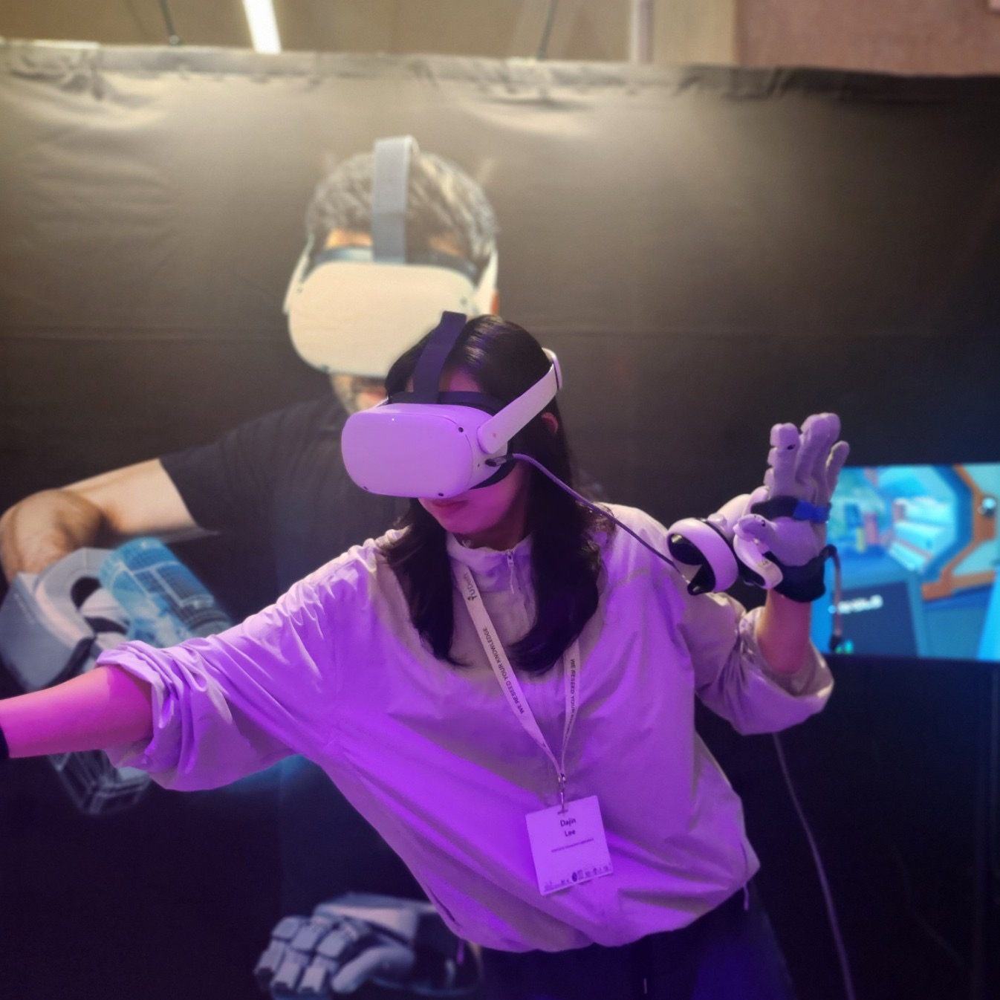

Dajin Lee, Ph.D. Candidate

Hello! I am a Ph.D. candidate in the Department of Convergence IT Engineering at POSTECH, advised by Prof. Seungmoon Choi.
My research focuses on haptics, multisensory integration, and Human-Computer Interaction (HCI).
📢 I am looking for research internship opportunities in 2026!
Haptic Perception & Rendering
- Spatial Tactile Optimizer: Toward Perceptual Optimization for Multi-Point Vibrotactile Cues on the Torso (CHI'26a)
- Effects of Frequency and Magnitude on Steering Wheel Vibration Discomfort (HS'26)
- Effects of Contact Force on Vibrotactile Perceived Intensity Across the Upper Body (ToH'24a)
🔗
- Heart Activity Modulation Using Haptic Biofeedback (UIST'24)
🔗
- Vibrotactile Metaphor of Physical Interaction Using Body-Penetrating Phantom Sensations (WHC'21)
🔗
Multisensory Integration of Sound and Touch
- Perceptual Alignment of Spatial Auditory and Tactile Stimuli for Effective Directional Cueing (TVCG'25)
🔗
- Enhancing Body-Penetrating Phantom Sensations Through Multisensory Integration of Sound and Vibration (WHC'25)
🔗
Human-Computer Interaction and Qualitative Analysis
- Touch with Meaning: A Contextual Analysis of Social Touch (CHI'26b)
- Augmenting Outdated Museum Exhibits with Embodied and Tangible Interactions (IJHCS'25)
🔗
- A Comparative Study of Physical and Haptic Exhibits in an Informal Learning Environment (ToH'24b)
🔗
- Participatory Design for In-Vehicle Vibrotactile Warnings on Driver's Seat (Eurohaptics'24)
🔗